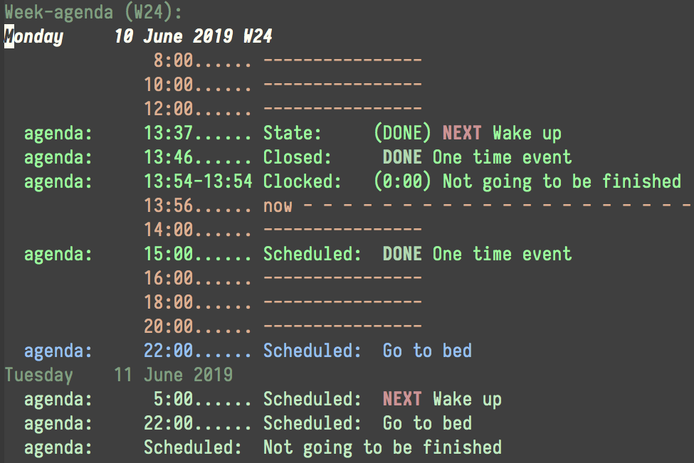

org-mode协助进行月度回顾
使用org-mode记录时间消费情况的一个好处就是可以协助进行月度回顾。
一种方法是使用 org-agenda-log-mode 来展示每天的工作日程(在org-agenda窗口中按下 l 键)

不过默认org-agenda只显示本周的内容因此还需要设置一下:
- 我们可以通过设置
org-agenda-start-day来指定 org-agenda 显示的开始日期 - 还可以通过设置
org-agenda-span来指定 org-agenda 显示的日期数
为了方便，我一般都是自定义一个 月度回顾 的 org-agenda 视图来查看:
(push '("r" "月度回顾" ((agenda "" ((org-agenda-span 30) (org-agenda-start-day "-30d"))))) org-agenda-custom-commands)
不过这种方法有两个不方便的地方：
- org-agenda要准备30天的数据，耗时比较长
- 工作都分散在每天的日程中了，在分析长跨度工作的耗时时比较麻烦
所幸的是 org-mode 还提供了 org-table 的功能，能够对一段时间内的工作耗时进行汇总。 比如我想汇总一下 2020年4月份都做了哪些工作，每项工作耗时是多少，那么可以在一个org文件中输入一个clocktable:
然后将光标放在 clocktable 中,按下 C-c C-c, org-mode 就会根据 #+BEGIN 中设置的参数去汇总数据填充内容了
Clock summary at [2020-05-03 日 14:59] | File | Headline | Time | |--------------------+-----------------------------------------+------------| | books.org | *File time* | *0:55* | | | HOW TO START A BLOG THAT PEOPLE WILL... | 0:40 | | | Python编程快速上手 | 0:02 | | | 大脑黑客 | 0:13 | |--------------------+-----------------------------------------+------------| | home.org | *File time* | *1d 8:59* | | | 配置Emacs | 2:10 | | | 背单词 | 21:30 | | | LCTT | 0:21 | | | 写blog | 3:10 | | | PROJECTS | 2:10 | |--------------------+-----------------------------------------+------------| | office.org | *File time* | *5d 17:11* | | | Regular | 1d 8:10 | | | 自动发布项目 | 7:07 | | | 运维自动化 | 6:38 | | | 查数 | 15:38 | | | 发布 | 1:50 | | | 管理工作 | 1d 7:48 | | | 其他 | 1d 17:25 | 省略.....